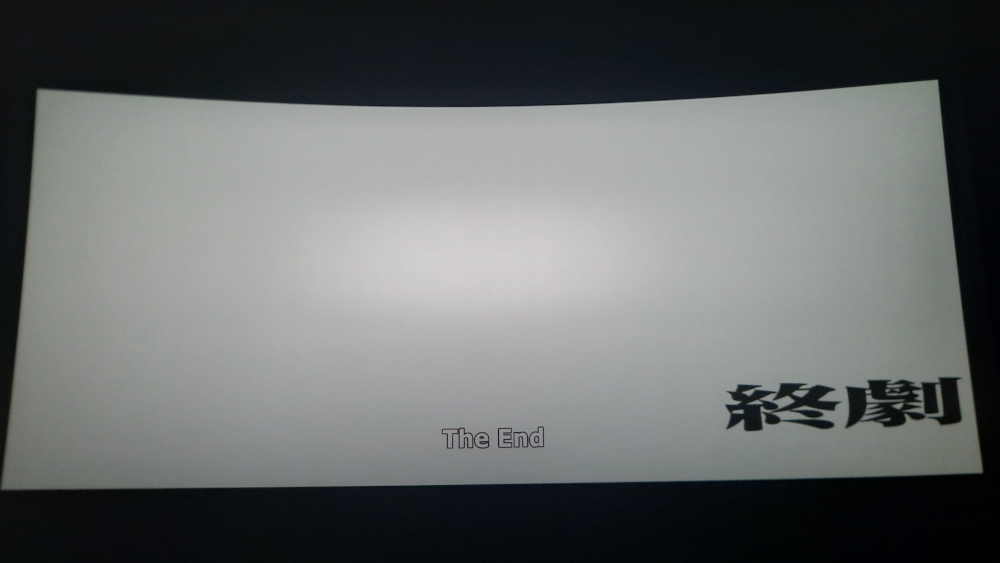

My Time Watching Evangelion 3.0 + 1.0: Thrice Upon a Time in IMAX. - Nick64
My Time Watching Evangelion 3.0 + 1.0: Thrice Upon a Time in IMAX. - Nick64
It was mid.
Let me clarify. I… like this movie. Not a lot, but I like it. I think watching it in theaters has made me appreciate some aspects of the movie a lot, some of the scenes were really cool to see in theaters (especially the scene of Asuka trying to penetrate Unit 13) and the music was really cool and epic to hear, but the IMAX presentation felt somewhat… lacking, I guess? It didn’t feel as punchy as I had hoped. And all these things also don’t help with the story of the movie itself and how things go, which I have quite a few issues with some parts, mainly the end.
Was it a waste of 2 hours and 45 minutes of my life? No, not at all. Would I willingly watch it again? No. At most, I’ll buy the Blu-ray once it comes out so I can complete my Evangelion Blu-ray collection.
It is sad to see that this is the end of Evangelion though… supposedly. Knowing how much of a cash cow Evangelion is, it inevitably will return somehow.
But for now…
Also this is the last post of the month :(
© 2022 Nick64 oh wait i dont care lol